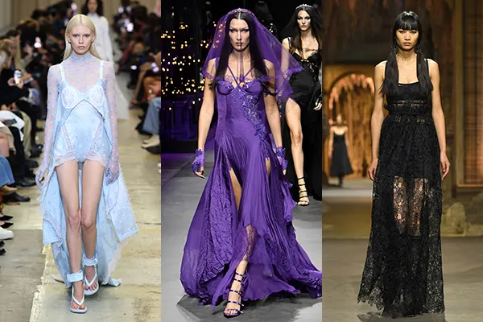
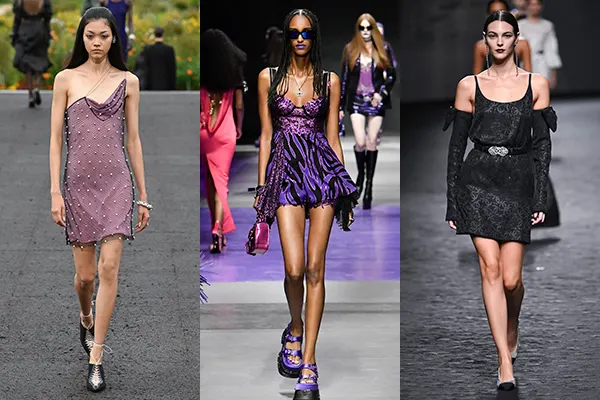
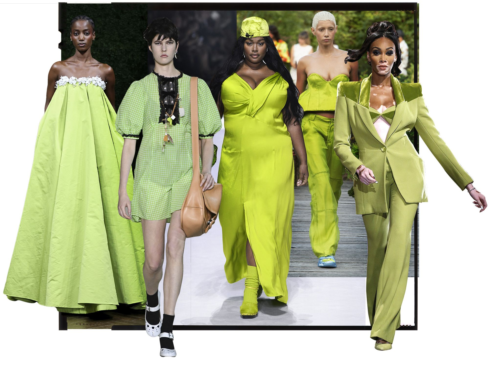
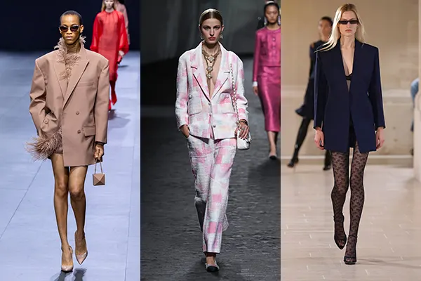

Lace
Lace was out in full force, with many designers favouring sweeping maxis with cool cutwork. Baby blue lingerie-inspired pieces were showcased at Burberry's belated London Fashion Week show whereas both Dior and Versace oozed gothic glamour.
Fringing
Versace's buttery leather fringing felt very 'cool-girl-meets-cowboy', whereas Victoria Beckham's take spotlighted ra-ra minis and ultra-kinetic hems.They will be making a big comeback for spring and summer collections.
Mini dresses
Speak of the devil, mini dresses are back and at the SS23 iterations are all about texture. Pearl embellishments at Givenchy and belted LBDs at Chanel provided a certain opulence, whereas Versace's shiny purple chromes felt flashy, in the best possible way.
Lime green
The color lime green will most likely to be making a comeback because of the brightness and modernity of the color.
Tailoring
Slouchy, oversized blazers were all the rage at Valentino and even Chanel opted for relaxed-fit versions of its trademark bouclé jackets in playful pinks. If you're a die-hard sharp tailoring gal, luckily Victoria Beckham came through with simple tailored blazers that acted as mini dresses.